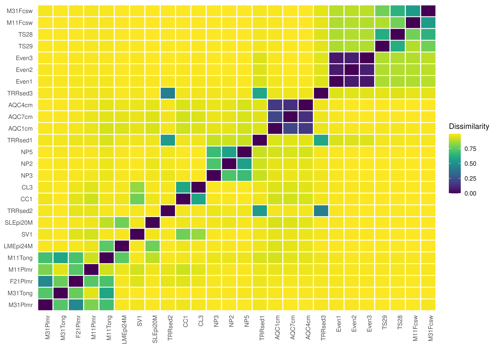
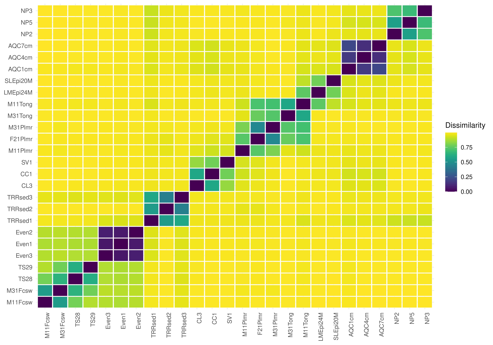
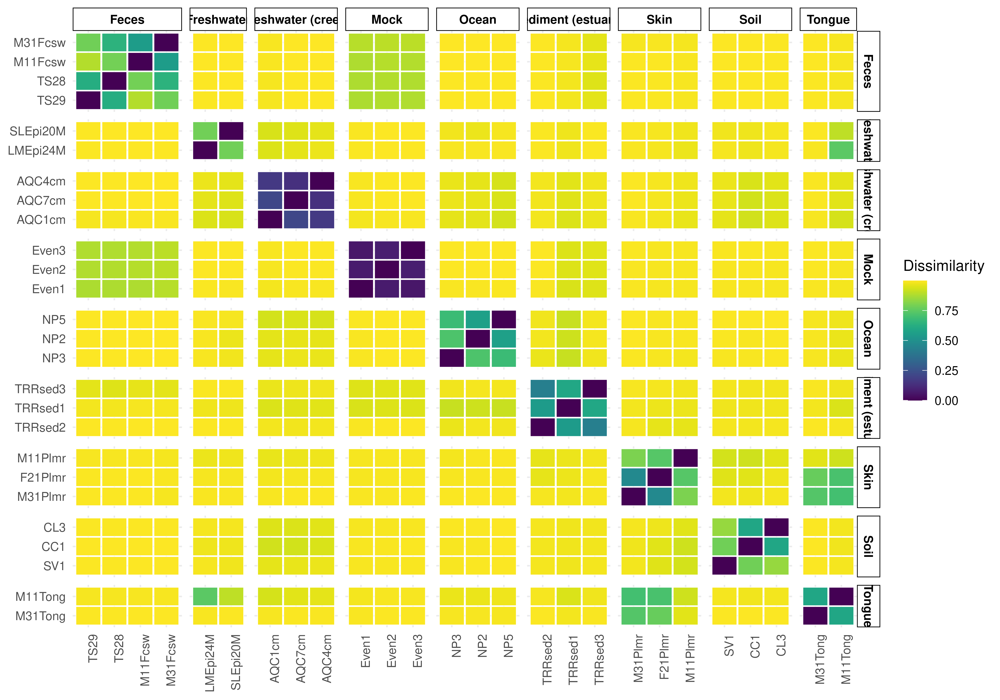

R/AllGenerics.R, R/plotHeatmap.R
plotDissimilarity.RdPlots a sample dissimilarity matrix, stored in metadata(x), as a
heatmap. Samples can be sorted so that similar samples are next to each
other. The same order is used for both axes.
plotDissimilarity(x, ...)
# S4 method for class 'SummarizedExperiment'
plotDissimilarity(x, name, col.var = NULL, sort.method = "MDS_angle", ...)Additional arguments passed to the facetting, for example
scales and space (both default "free").
Character scalar. Name of the dissimilarity matrix in
metadata(x). The matrix must be a dist object, as returned by
addDissimilarity, with one row per
sample of x.
NULL or character vector. Variables from
colData(x) used for facetting. Because both axes are samples, the
same variables split both the rows and the columns.
(Default: NULL)
NULL, Character scalar or
BlusterParam object. Specifies the method used to sort samples.
Seriation methods for distances, such as "MDS_angle" (NeatMap-like
angular ordering) or "OLO" (hierarchical clustering with optimal
leaf ordering), are applied to the dissimilarities directly (see
seriation::list_seriation_methods("dist")). Other methods are
applied to the dissimilarity matrix. See getHeatmapOrder
for details. If NULL, samples are shown in the order of x.
(Default: "MDS_angle")
A ggplot2 object.
data(GlobalPatterns)
tse <- GlobalPatterns
tse <- transformAssay(tse, method = "relabundance")
# Calculate Bray-Curtis dissimilarity and store it in metadata
tse <- addDissimilarity(tse, method = "bray", assay.type = "relabundance")
plotDissimilarity(tse, "bray")

# Sort with hierarchical clustering
plotDissimilarity(tse, "bray", sort.method = "OLO")

# Split rows and columns by sample type
plotDissimilarity(tse, "bray", col.var = "SampleType")
